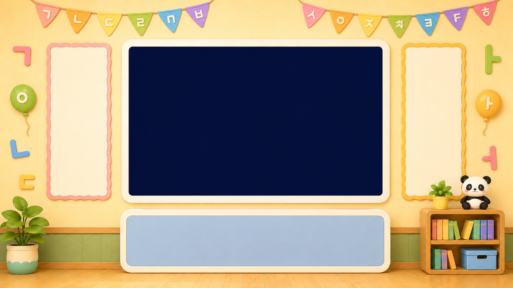

한글이 야 호 !
🎬 보고 싶은 영상을 눌러요
포스터 제목이나 아래 단계 버튼을 눌러요
포스터 제목이나 아래 단계 버튼을 눌러요
📺 광고가 나오고 있어요
조금만 기다려요!
「건너뛰기」 단추가 나오면 오른쪽 아래 ↘ 에서 눌러요
「건너뛰기」 단추가 나오면 오른쪽 아래 ↘ 에서 눌러요
🎉 야호!
노래 목록

⚙️ 설정 한글이 야호! v2 온라인판 (2026-07-18)
재생 속도
소리 크기
최대 음량 제한
차분 모드 (반짝임·효과음 끄기)
동영상 크게 보기 (재생 시 화면 가득)
가사 크기
🎼 가사 싱크 만들기 / 고치기
노래를 들으며 가사 줄이 시작될 때마다 탭 버튼(또는 스페이스바)을 누르면 저장됩니다. 유튜브 곡도 됩니다.
💾 데이터
📝 영상 편집 영상 추가·수정·삭제 · 분류(낱말·받침·겹글자·우리반) · 구간 지정
목록에서 제목을 누르면 여기로 불러와 수정할 수 있어요.
우리반으로 분류한 영상은 홈 화면 오른쪽 아래 팬더를 누르면 '우리반' 목록에 나와요.
구간(시작~끝)을 넣으면 그 부분만 재생돼요. (같은 번호로 추가하면 덮어씀)
🎼 가사 싱크
한 줄에 가사 한 줄씩 적어주세요. (화면에 한 번에 보여줄 단위)